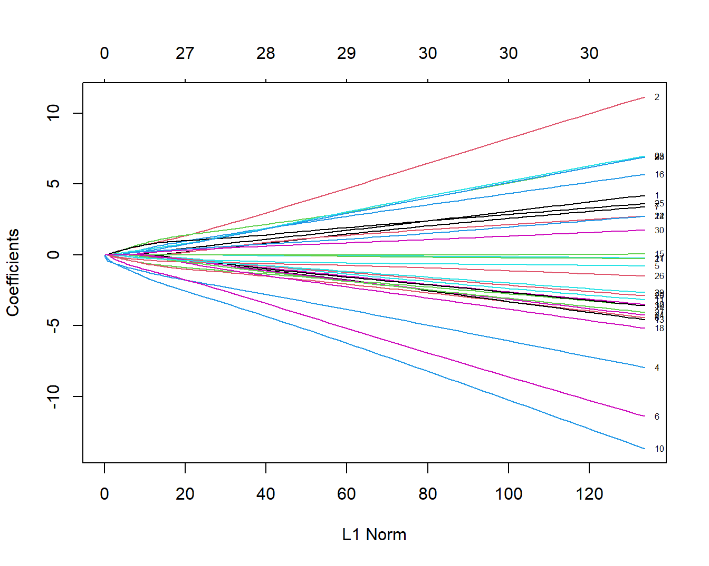
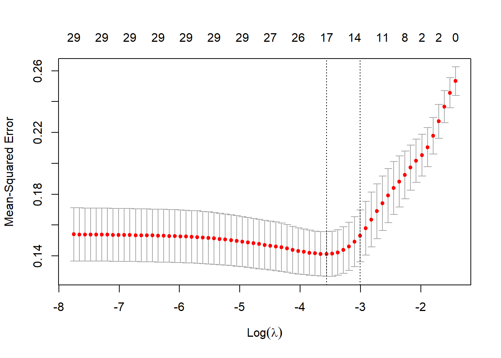
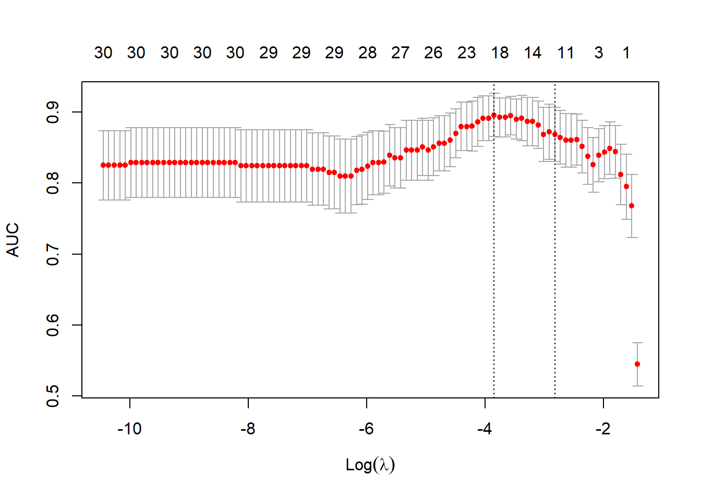
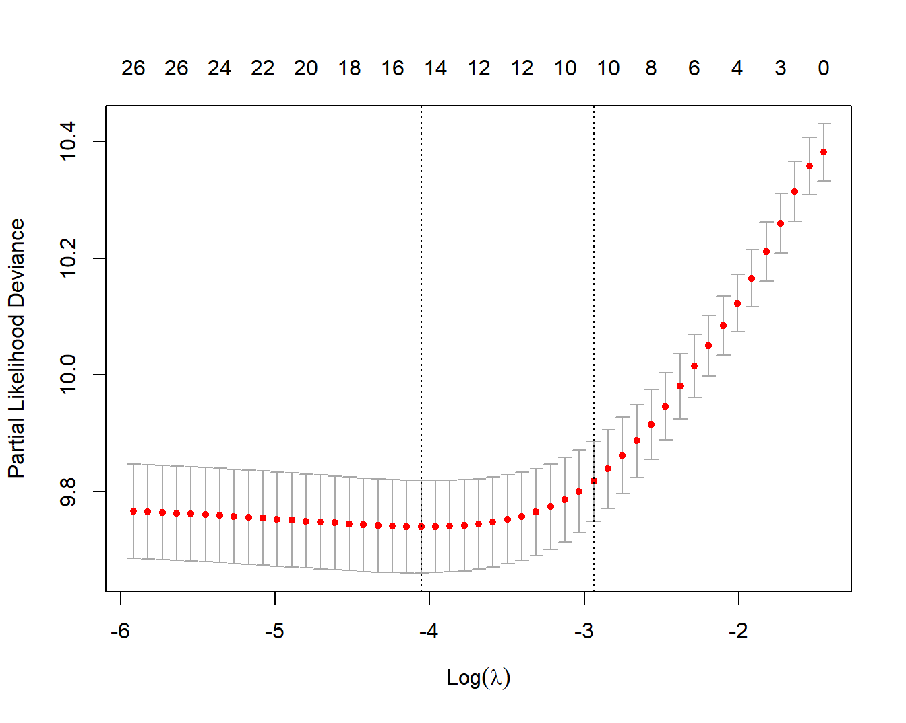
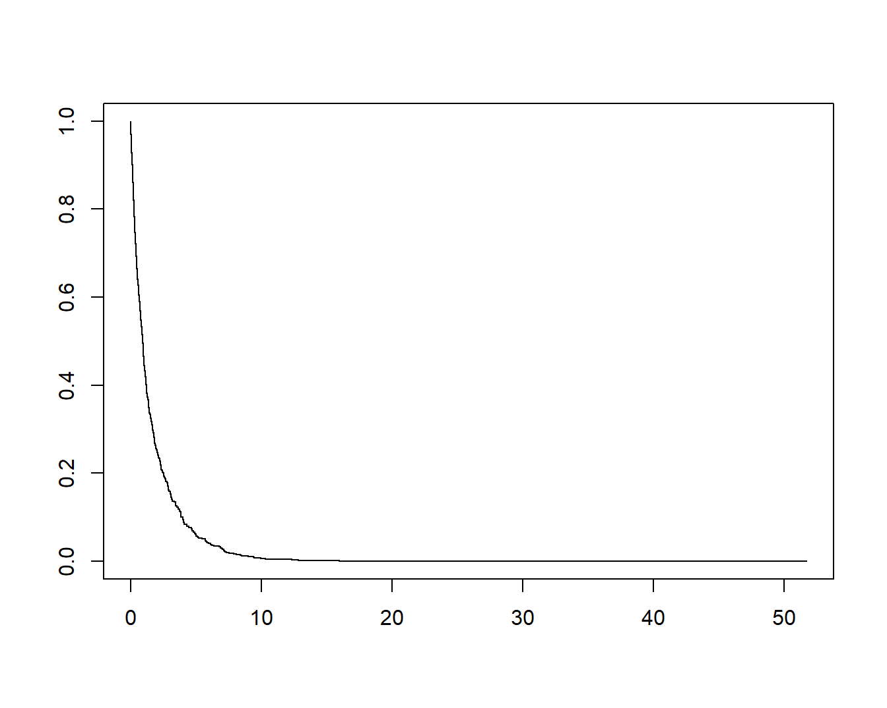
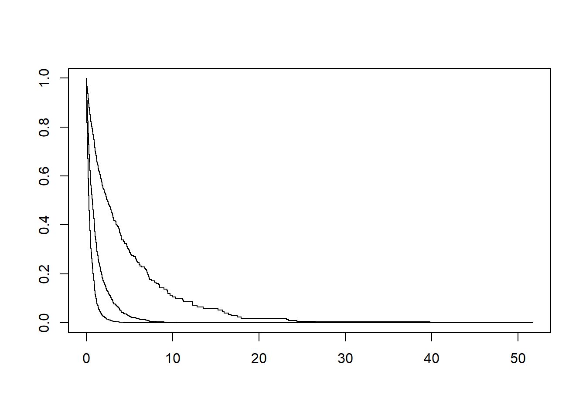

library(glmnet)18 lasso回归筛选变量
本文节选自用glmnet做lasso回归
glmnet包可以实现lasso回归、岭（ridge）回归、弹性网络（elastic-net），我们主要介绍它的lasso回归功能，主要是因为lasso可以把变量的系数变为0，达到筛选变量的目的。并且我们会以逻辑回归和COX回归的lasso为例进行演示。
在进行演示前，有一些基础知识需要大家提前了解。
对于一些回归模型来说，变量的系数可以说明变量的重要程度，所以如果某个变量的系数是0，那么说明这个变量不太重要。lasso回归就可以通过算法让其中一些不重要变量的系数变成0，达到筛选变量的目的。让系数变小，就是大家常说的对系数进行惩罚(penalty)，也被称为正则化(regularization)。具体实现方式大家可以自己去学习复杂的公式~
正则化一般有2种，也就是L1正则化和L2正则化，又称为L1范数和L2范数。如果使用L1正则化，就是lasso回归，使用L2正则化就是岭回归。
在glmnet包中，lambda这个参数是总的正则化程度，该值越大惩罚力度越大，最终保留的变量越少，模型复杂度越低；alpha这个参数是L1正则化的比例，当alpha=1时，就是lasso，当alpha=0时，就是岭回归，当0<alpha<1时，就是弹性网络。
加载R包：
18.1 正则化逻辑回归
用一个二分类数据进行演示，因为大家最常用的就是二分类数据和生存数据了。
data(BinomialExample)
x <- BinomialExample$x
y <- BinomialExample$y
dim(x)
## [1] 100 30
class(x)
## [1] "matrix" "array"
x[1:4,1:4]
## [,1] [,2] [,3] [,4]
## [1,] -0.6192614 0.01624409 -0.6260683 0.4126846
## [2,] 1.0942728 0.47257285 -1.3371470 -0.6405813
## [3,] -0.3567040 0.30121334 0.1905619 0.2340268
## [4,] -2.4690701 2.84771447 1.6602435 1.5688130
class(y)
## [1] "integer"
head(y)
## [1] 0 1 1 0 1 0注意glmnet需要的自变量格式，需要是matrix或者稀疏矩阵格式！
family用来指定不同的模型类型，对于二分类数据，应该选择binomial。
family的其他选项如下：“gaussian”（默认）, “poisson”, “multinomial”, “cox”, “mgaussian”。
建立正则化的逻辑回归模型（就是大家说的lasso-logistic模型）就是1句代码，非常简单：
fit <- glmnet(x, y, family = "binomial")官方不建议直接提取fit中的元素，因为提供了plot，print，coef，predict方法帮助大家探索结果。
18.1.1 可视化
可视化各个变量系数的变化，这个图是大家最常见的图形之一：
plot(fit,label = T)
这个图形中的每一条线都代表1个变量，并且展示了在不同的L1范数（L1-Norm）下该变量的系数变化。这个图下面的横坐标是L1范数，上面的横坐标是L1范数下对应的非零系数的个数，比如当L1范数是20时，对应的非零系数有27个，也就是此时可以有27个变量保留下来。左侧纵坐标是变量的系数值。
这里的plot()函数还有一个xvar参数，可以用于指定不同的横坐标：
norm：横坐标是L1 norm，这个是默认值；lambda：横坐标是log-lambda；dev：横坐标是模型解释的%deviance
plot(fit, xvar = "lambda")这里的横坐标是log-lambda，可以看做是正则化程度。
上面这幅图展示了随着lambda值的变化，每个变量系数的变化，可以看到随着lambda值变大，系数值逐渐减小，直至为0，上面的横坐标也显示随着lambda值变大，保留的变量数量也越来越少。
plot(fit, xvar = "dev", label = TRUE)这幅图和上面图的解释是一样的，只有下面的横坐标不一样。
最后一幅图下面的横坐标是模型解释的偏差百分比，也可以用来衡量模型复杂度。可以看出在图形的右侧部分，模型能够解释的偏差百分比基本变化不大，但是模型系数基本都是往上或往下“飘”的很厉害。
虽然官方不建议提取数据，但是很明显大家都喜欢提取数据再自己美化图片，我之前也介绍过一种简便方法，可以实现自定义美化图形：lasso回归结果美化
18.1.2 打印结果
使用print(fit)可以查看不同lambda值对应的自由度和模型能够解释的偏差百分比：
print(fit) # 直接fit也可
##
## Call: glmnet(x = x, y = y, family = "binomial")
##
## Df %Dev Lambda
## 1 0 0.00 0.240500
## 2 1 2.90 0.219100
## 3 1 5.34 0.199600
## 4 2 8.86 0.181900
## 5 2 11.95 0.165800
## 6 2 14.59 0.151000
## 7 2 16.88 0.137600
## 8 3 18.95 0.125400
## 9 7 22.38 0.114200
## 10 8 26.26 0.104100
## 11 8 29.73 0.094850
## 12 8 32.77 0.086420
## 13 9 35.58 0.078750
## 14 11 38.98 0.071750
## 15 12 42.23 0.065380
## 16 12 45.29 0.059570
## 17 13 48.09 0.054280
## 18 13 50.63 0.049450
## 19 14 53.00 0.045060
## 20 14 55.19 0.041060
## 21 15 57.33 0.037410
## 22 15 59.43 0.034090
## 23 16 61.36 0.031060
## 24 17 63.15 0.028300
## 25 17 64.85 0.025790
## 26 18 66.42 0.023490
## 27 19 67.98 0.021410
## 28 20 69.44 0.019510
## 29 20 70.80 0.017770
## 30 21 72.10 0.016190
## 31 21 73.33 0.014760
## 32 23 74.52 0.013440
## 33 23 75.65 0.012250
## 34 24 76.72 0.011160
## 35 24 77.77 0.010170
## 36 25 78.77 0.009267
## 37 25 79.73 0.008444
## 38 26 80.66 0.007693
## 39 26 81.57 0.007010
## 40 27 82.48 0.006387
## 41 27 83.39 0.005820
## 42 27 84.30 0.005303
## 43 27 85.21 0.004832
## 44 27 86.12 0.004402
## 45 27 87.05 0.004011
## 46 28 87.96 0.003655
## 47 28 88.87 0.003330
## 48 28 89.76 0.003034
## 49 28 90.61 0.002765
## 50 28 91.41 0.002519
## 51 28 92.16 0.002295
## 52 28 92.86 0.002092
## 53 28 93.50 0.001906
## 54 28 94.08 0.001736
## 55 29 94.61 0.001582
## 56 29 95.10 0.001442
## 57 29 95.54 0.001314
## 58 29 95.95 0.001197
## 59 29 96.31 0.001091
## 60 29 96.64 0.000994
## 61 29 96.94 0.000905
## 62 29 97.22 0.000825
## 63 29 97.47 0.000752
## 64 29 97.69 0.000685
## 65 29 97.90 0.000624
## 66 29 98.09 0.000569
## 67 29 98.26 0.000518
## 68 29 98.41 0.000472
## 69 29 98.55 0.000430
## 70 29 98.68 0.000392
## 71 29 98.80 0.000357
## 72 30 98.91 0.000325
## 73 30 99.00 0.000296
## 74 30 99.09 0.000270
## 75 30 99.17 0.000246
## 76 30 99.25 0.000224
## 77 30 99.31 0.000204
## 78 30 99.37 0.000186
## 79 30 99.43 0.000170
## 80 30 99.48 0.000155
## 81 30 99.52 0.000141
## 82 30 99.57 0.000128
## 83 30 99.61 0.000117
## 84 30 99.64 0.000106
## 85 30 99.67 0.000097
## 86 30 99.70 0.000088
## 87 30 99.73 0.000081
## 88 30 99.75 0.000073
## 89 30 99.77 0.000067
## 90 30 99.79 0.000061
## 91 30 99.81 0.000056
## 92 30 99.83 0.000051
## 93 30 99.84 0.000046
## 94 30 99.86 0.000042
## 95 30 99.87 0.000038
## 96 30 99.88 0.000035
## 97 30 99.89 0.000032
## 98 30 99.90 0.000029左侧的df是非零系数的个数，中间的%Dev是模型解释的偏差百分比，右侧的Lambda是总惩罚值大小。
默认情况下，glmnet()函数中的nlambda参数的取值是100，也就是会取100个不同的Lambda值，但是如果%Dev变化不大或者不再变化，它可能会提前停止，取不到100个值，比如我们这个例子就是这样。
18.1.3 查看变量系数
我们可以通过coef()查看某个Lambda值下的变量系数：
# 比如让lambda=0.065380
coef(fit, s = 0.065380)
## 31 x 1 sparse Matrix of class "dgCMatrix"
## s1
## (Intercept) 0.210158382
## V1 .
## V2 0.193006823
## V3 -0.069820214
## V4 -0.606741531
## V5 -0.081962193
## V6 -0.285761723
## V7 .
## V8 -0.165879158
## V9 0.092678665
## V10 -0.595865115
## V11 .
## V12 .
## V13 .
## V14 .
## V15 .
## V16 .
## V17 .
## V18 .
## V19 .
## V20 .
## V21 .
## V22 0.054956208
## V23 0.001474751
## V24 .
## V25 0.187112112
## V26 -0.113782733
## V27 .
## V28 .
## V29 .
## V30 .可以看到此时一共有12个变量的系数不是0（没包括截距），其余系数是0的变量就可以去掉了，和上面print(fit)的结果是一样的。
这里使用了s表示lambda，为什么不直接用lambda呢？这是作者为了以后的某些功能做准备，但是这一点在tidymodels中大受诟病…
也可以同时指定多个lambda值：
coef(fit, s = c(0.065380,0.078750))
## 31 x 2 sparse Matrix of class "dgCMatrix"
## s1 s2
## (Intercept) 0.210158382 0.22467551
## V1 . .
## V2 0.193006823 0.13578915
## V3 -0.069820214 .
## V4 -0.606741531 -0.55088786
## V5 -0.081962193 -0.08588769
## V6 -0.285761723 -0.18303729
## V7 . .
## V8 -0.165879158 -0.12710236
## V9 0.092678665 .
## V10 -0.595865115 -0.50054790
## V11 . .
## V12 . .
## V13 . .
## V14 . .
## V15 . .
## V16 . .
## V17 . .
## V18 . .
## V19 . .
## V20 . .
## V21 . .
## V22 0.054956208 0.01466017
## V23 0.001474751 .
## V24 . .
## V25 0.187112112 0.13534486
## V26 -0.113782733 -0.08255906
## V27 . .
## V28 . .
## V29 . .
## V30 . .除此之外，coef()还有一个exact参数，如果exact=TRUE，那么当一个lambda不在默认的lambda值中时，函数会重新使用这个lambda值拟合模型然后给出结果，如果exact=FALSE（默认值），那么会使用线性插值给出结果。
举个例子，0.08并不在lambda值向量中：
# 可以看前面的print(fit)的结果，看看lambda的取值有哪些
any(fit$lambda == 0.08)
## [1] FALSE此时两种情况下的系数是不太一样的：
coef.apprx <- coef(fit, s = 0.08, exact = FALSE)
coef.exact <- coef(fit, s = 0.08, exact = TRUE, x=x, y=y)
cbind2(coef.exact[which(coef.exact != 0)],
coef.apprx[which(coef.apprx != 0)])
## [,1] [,2]
## [1,] 0.22549572 0.22541853
## [2,] 0.13138628 0.13159475
## [3,] -0.54737500 -0.54723674
## [4,] -0.08464614 -0.08430109
## [5,] -0.17544453 -0.17586695
## [6,] -0.12334038 -0.12323991
## [7,] -0.49261301 -0.49314684
## [8,] 0.01036968 0.01227180
## [9,] 0.13183895 0.13169100
## [10,] -0.07909589 -0.07914430注意在使用exact = TRUE时，需要提供x和y，因为需要重新拟合模型。
18.1.4 预测新数据
对于新数据，可直接使用predict()进行预测，此时也是可以指定lambda值的：
nx <- head(x) #随便准备的新的测试数据
predict(fit, newx = nx, s = c(0.065380,0.078750))
## s1 s2
## [1,] -0.7609757 -0.5755105
## [2,] 1.4563904 1.1266031
## [3,] 0.4415409 0.3981256
## [4,] -1.1676684 -0.9923334
## [5,] 0.5730604 0.5612494
## [6,] 0.3064590 0.1926588由于glmnet包可以用于线性回归、逻辑回归、cox回归、泊松回归、多项式回归等（通过参数family指定即可，默认值是gaussian，可通过?glmnet查看帮助文档），所以在predict()时，type参数略有不同，对于逻辑回归，type可以是以下3种：
link：线性预测值，默认是这个response：预测概率class：预测类别
如果要获得预测概率：
predict(fit, newx = nx, s = c(0.065380,0.078750), type = "response")
## s1 s2
## [1,] 0.3184345 0.3599663
## [2,] 0.8109800 0.7552115
## [3,] 0.6086261 0.5982372
## [4,] 0.2372767 0.2704514
## [5,] 0.6394690 0.6367416
## [6,] 0.5760207 0.5480163可以通过?predict.glmnet查看帮助文档。
18.1.5 交叉验证
glmnet()函数会返回多个模型（因为会使用多个lambda值），但是很多情况下，用户并不知道到底选择哪一个lambda值，即不知道到底保留哪些变量，或者希望函数能自动给出结果。
所以glmnet包提供了交叉验证法，帮助用户做出选择，使用方法也非常简单：
cvfit <- cv.glmnet(x, y)除了glmnet()中的参数之外，cv.glmnet()还有一些独有的参数：
nfolds：交叉验证的折数，默认是10折交叉验证；foldid：指定哪个观测在哪一折中，一般用不到；type.measure：模型性能指标，对于不同的family，也是略有不同，可查看帮助文档
对于逻辑回归，type.measure可以是以下取值：
mse：均方误差；deviance：偏差；mae：平均绝对误差，mean absolute error；class：错分率；auc：只能用于二分类逻辑回归
18.1.6 plot方法
对于cv.glmnet()的结果，也提供了plot，print，coef，predict方法。
plot(cvfit)
该图形下面的横坐标是log10(lambda)，上面的横坐标是非零系数的数量，左侧的纵坐标是MSE（均方误差），改图展示了不同lambda取值下MSE的变化以及MSE±1倍标准差的置信区间。
图中的两条竖线就是函数帮你挑选的两个结果，一个是lambda.min，此时的lambda值可以使得MSE最小，另外一个是lambda.1se，此时的lambda值可以使得MSE在最小MSE的1倍标准误区间内，但是同时可以使模型的复杂度降低。（在模型误差之间的差距不是很大的时候，我们肯定是喜欢更简单的模型啦，这个不难理解吧？）
查看这两个lambda值：
cvfit$lambda.min
## [1] 0.02829953
cvfit$lambda.1se
## [1] 0.04945423换一个type.measure试试看：
cvfit1 <- cv.glmnet(x, y, family = "binomial", type.measure = "auc")
plot(cvfit1)
这个图的解读和上面那个图的解读也是一样的，只不过左侧纵坐标不一样而已。
交叉验证的图形也是可以自己美化的，参考推文：lasso回归结果美化
18.1.7 coef方法
查看这两个取值下保留的非零系数情况：
# 此时s不能同时使用多个值
coef(cvfit, s = "lambda.min")
## 31 x 1 sparse Matrix of class "dgCMatrix"
## s1
## (Intercept) 0.538475144
## V1 .
## V2 0.054881645
## V3 -0.044528447
## V4 -0.145609945
## V5 -0.023218071
## V6 -0.104593647
## V7 .
## V8 -0.057762149
## V9 0.073669351
## V10 -0.148264046
## V11 -0.009489879
## V12 .
## V13 -0.002021430
## V14 .
## V15 .
## V16 0.013778043
## V17 .
## V18 .
## V19 .
## V20 .
## V21 .
## V22 0.032149957
## V23 0.034431329
## V24 .
## V25 0.069884641
## V26 -0.050479757
## V27 .
## V28 0.021367958
## V29 -0.021118533
## V30 .
coef(cvfit, s = "lambda.1se") # 这个是默认值
## 31 x 1 sparse Matrix of class "dgCMatrix"
## s1
## (Intercept) 0.541225753
## V1 .
## V2 0.046087719
## V3 -0.027102998
## V4 -0.132840898
## V5 -0.019424141
## V6 -0.079980759
## V7 .
## V8 -0.044011217
## V9 0.043650956
## V10 -0.133222487
## V11 .
## V12 .
## V13 .
## V14 .
## V15 .
## V16 .
## V17 .
## V18 .
## V19 .
## V20 .
## V21 .
## V22 0.022463353
## V23 0.015349808
## V24 .
## V25 0.052132213
## V26 -0.037104017
## V27 .
## V28 0.002725018
## V29 -0.005935917
## V30 .此时你就可以根据实际情况选择使用lambda.min还是lambda.1se，如果你选择了lambda.1se的话，那么就是有以下变量被保留：V2/V3/V4/V5/V6/V8/V9/V10/V22/V23/V25/V26/28/V29，其他变量的系数都是0，说明不重要，就可以被丢掉了。
可以看到coef()的结果都是稀疏矩阵格式，这种格式计算效率更高，但是不方便后续使用，可以使用as.matrix()转换为矩阵格式：
as.matrix(coef(cvfit))
## s1
## (Intercept) 0.541225753
## V1 0.000000000
## V2 0.046087719
## V3 -0.027102998
## V4 -0.132840898
## V5 -0.019424141
## V6 -0.079980759
## V7 0.000000000
## V8 -0.044011217
## V9 0.043650956
## V10 -0.133222487
## V11 0.000000000
## V12 0.000000000
## V13 0.000000000
## V14 0.000000000
## V15 0.000000000
## V16 0.000000000
## V17 0.000000000
## V18 0.000000000
## V19 0.000000000
## V20 0.000000000
## V21 0.000000000
## V22 0.022463353
## V23 0.015349808
## V24 0.000000000
## V25 0.052132213
## V26 -0.037104017
## V27 0.000000000
## V28 0.002725018
## V29 -0.005935917
## V30 0.00000000018.1.8 predict方法
对新数据进行预测也是一样的用法：
predict(cvfit, newx = x[1:5,], s = "lambda.min")
## lambda.min
## [1,] 0.2880810
## [2,] 0.9411606
## [3,] 0.6169352
## [4,] 0.1604069
## [5,] 0.597604318.1.9 一些参数解释
alpha：可以看做是L1正则化的比例，当alpha=1时，就是lasso，当alpha=0时，就是岭回归，当0<alpha<1时，就是弹性网络。weights：不同观测的权重，默认都是1。（glmnet会自动对权重进行重新标准化，使得所有观测的权重相加等于样本数量）。nlambda：lambda的取值个数，默认是100。lambda：用户可以通过这个参数自己指定lambda的取值。standardize：逻辑值，是否在拟合模型前对自变量进行标准化，默认是TRUE。
下面是一个对不同观测自定义权重的示例。
我们这个示例中，样本量是100，所以我们为100个观测自定义以下权重：
# 简单定义一下，前50个是1，后50个是2
wts <- c(rep(1,50), rep(2,50))
fit1 <- glmnet(x, y, alpha = 0.2, weights = wts, nlambda = 20)
print(fit1)
##
## Call: glmnet(x = x, y = y, weights = wts, alpha = 0.2, nlambda = 20)
##
## Df %Dev Lambda
## 1 0 0.00 1.18600
## 2 2 11.40 0.73050
## 3 10 31.21 0.44990
## 4 11 48.89 0.27710
## 5 15 59.86 0.17060
## 6 21 66.72 0.10510
## 7 26 71.32 0.06471
## 8 28 73.71 0.03985
## 9 29 74.84 0.02454
## 10 29 75.37 0.01512
## 11 29 75.58 0.00931
## 12 29 75.66 0.00573
## 13 30 75.70 0.00353
## 14 30 75.71 0.00217
## 15 30 75.72 0.00134
## 16 30 75.72 0.00082
## 17 30 75.72 0.00051可以看到结果中只有17个lambda值，少于我们指定的20个，原因已经在前面解释过了。
18.2 正则化Cox回归
正则化的COX回归，也就是glmnet在生存分析中的应用，这里我们还是以lasso为例进行演示。
glmnet包的详细使用介绍已经在前面都介绍过了，正则化的COX回归并没有太大的不同，所以这里简单介绍一下。
下面是一些理论解释，大家随便看看就好。
在glmnet中，我们使用弹性网络（elastic net）方法对部分似然的负对数进行惩罚。
部分似然（partial-likelihood）是一种用于处理生存分析（survival-analysis）中右侧截尾（right-censored）观测的方法。而负对数部分似然（negative-log-partial-likelihood）则是对部分似然取反并求对数，目的是将最大化似然函数的问题转化为最小化负对数似然函数的问题。
为了进一步约束模型的复杂度和提高模型的泛化能力，我们在负对数部分似然的基础上引入了弹性网络惩罚（elastic-net-penalty）。弹性网惩罚结合了L1正则化（L1-regularization）和L2正则化（L2-regularization）的特性，从而既能产生稀疏解，又能保留一些高度相关的特征。这样我们可以在建立模型时在部分似然的基础上，使用弹性网惩罚来进行模型的优化和参数选择，以提高模型的性能和泛化能力。
18.2.1 基础使用
glmnet对数据格式是有要求的，之前也说过，x必须是由自变量组成的matrix，y可以是一个两列的matrix，两列的列名必须是time和status，分别表示生存时间和生存状态，其中status必须使用数字0和数字1组成，0表示删失，1表示发生终点事件（又叫失效事件，比如死亡）。除此之外，y还可以是由Surv()函数生成的对象。
下面是一个示例数据：
library(glmnet)
library(survival)
data(CoxExample)
x <- CoxExample$x
y <- CoxExample$y
# 查看y的数据格式
y[1:5, ]
## time status
## [1,] 1.76877757 1
## [2,] 0.54528404 1
## [3,] 0.04485918 0
## [4,] 0.85032298 0
## [5,] 0.61488426 1建立模型，只需要使用family = "cox"即可：
fit <- glmnet(x, y, family = "cox")其中的一些参数比如alpha，weights，nlambda等，在前面已经介绍过了，这里就不再多介绍了。
可视化、提取系数、预测新数据和之前介绍的用法也是一模一样，这里也不再多说了。
18.2.2 交叉验证
对于正则化的cox来说，cv.glmnet()中的type.measure只能是"deviance"（默认值，给出部分似然），或者"C"，给出 Harrell-C-index。
set.seed(1)
cvfit <- cv.glmnet(x, y, family = "cox", type.measure = "C")
print(cvfit)
##
## Call: cv.glmnet(x = x, y = y, type.measure = "C", family = "cox")
##
## Measure: C-index
##
## Lambda Index Measure SE Nonzero
## min 0.03058 23 0.7304 0.005842 11
## 1se 0.05865 16 0.7267 0.005993 10画图也是一样的，下面这幅图的解释在前面也已经详细介绍过了，这里就不再多做解释了：
plot(cvfit)
提示
在glmnet中，对于生存时间的排列相同（ties）情况，使用的是Breslow近似（Breslow approximation）。这与survival软件包中的coxph函数的默认排列处理方法（tie-handling method）-Efron近似（Efron approximation）不同。
当存在相同的生存时间观测时，例如多个个体在同一时间发生事件，排列的处理方法对估计结果和推断的准确性至关重要。Breslow近似与Efron近似是最常见的两种处理方法。
在glmnet中，使用Breslow近似处理排列，该方法假设所有的排列发生在后一事件之前的所有时间上。这种近似方法在计算效率上比较高，但可能会导致估计的偏差。
而在survival软件包中的coxph函数，默认使用的是Efron近似处理排列。Efron近似方法基于考虑排列发生的时间顺序进行调整，更接近真实的结果，但在计算过程中稍微耗时一些。
因此，当在glmnet和survival软件包中处理生存分析时，需要注意到在处理排列的方法上的差异，以确保得到准确和一致的结果。
18.2.3 分层COX
coxph()支持strata()函数，因为它是使用公式形式的，但是glmnet不支持公式形式，只能使用x/y形式的输入，所以如果要实现分层，需要使用stratifySurv()。
继续使用上面的示例数据，我们把1000个观测分成5层：
# 把1000个观测分5层
strata <- rep(1:5, length.out = 1000)
y2 <- stratifySurv(y, strata) # 对y进行分层
str(y2[1:6])
## 'stratifySurv' num [1:6, 1:2] 1.7688 0.5453 0.0449+ 0.8503+ 0.6149 0.2986+
## - attr(*, "dimnames")=List of 2
## ..$ : NULL
## ..$ : chr [1:2] "time" "status"
## - attr(*, "type")= chr "right"
## - attr(*, "strata")= int [1:6] 1 2 3 4 5 1接下来把y2提供给glmnet()或者cv.glmnet()就可以实现正则化的分层COX了。
fit <- glmnet(x, y2, family = "cox")
cv.fit <- cv.glmnet(x, y2, family = "cox", nfolds = 5)
plot(cv.fit)
18.2.4 生存曲线
glmnet的结果可以直接提供给survfit()使用，可以用来画生存曲线。这里简单介绍一下，大家知道即可，因为大家在平时写文章时根本不会这么用……
以下是一个示例。
data(CoxExample)
x <- CoxExample$x
y <- CoxExample$y
y <- Surv(y[,1],y[,2]) # 需要用Surv转换格式
fit <- glmnet(x, y, family = "cox")
survival::survfit(fit, s = 0.05, x = x, y = y)
## Call: survfit.coxnet(formula = fit, s = 0.05, x = x, y = y)
##
## n events median
## [1,] 1000 692 0.922直接画图即可：
plot(survival::survfit(fit, s = 0.05, x = x, y = y))
这个生存曲线有些奇怪，因为数据原因，大家可以自己尝试下。
基于新的数据画生存曲线也是可以的：
plot(survival::survfit(fit, s = 0.05, x = x, y = y, newx = x[1:3, ]))